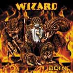

|
|
||
Wizard : Odin (2003) |
|

http://www.legion-of-doom.de |
1. The Prophecy 5:18 |
8.5/10 |
|
El último álbum de Wizard, que resumiendo mucho son la versión alemana de Manowar, se denomina Odin, lo que indica que nos encontramos ante un trabajo inspirado en la mitología nórdica, de la que Odín era la principal deidad. Este es un disco con un sonido de heavy metal muy clásico aunque con un doble bombo más propio de un estilo un poco, sólo un poco, más actual, una voz clara y potente, la de Sven DAnna, capaz de gritar muy alto cuando la canción lo requiere y bastante bien producido, aunque las guitarras han quedado quizás poco definidas (nada que desluzca la mezcla final). El disco engancha desde el primer momento, cuando el doble bombo surge al principio de "The prophecy", un gran tema para iniciar el disco, con buenos coros y un estribillo fácil de recordar. El doble bombo parece enlazar con la siguiente canción, "Betrayer", variada, con cambios de ritmo y pausas en la melodía que dejan espacio a algunas voces gritadas. "Dead hope" es un tema más lento, con un bajo muy marcado, muy del estilo de Manowar. La cuarta pista, "Dark god", nos trae de nuevo el doble bombo, los coros y un estribillo melodioso y pegadizo. "Loki's Punishment" es uno de los mejores temas del disco, rápido y contundente, con los coros en los momentos oportunos, y un claro esfuerzo para que la voz añada variedad cambiando de tono y de estilo constantemente a lo largo de toda la canción. Los coros de "Beginning of the end" y las varias capas de voces en diversos momentos, son lo más destacable de esta pieza, un nuevo ejemplo de fuerza y contundencia. "Thor's Hammer" resultaría un tema no muy brillante si no fuera por el estribillo, simple pero con efectivo y con pegada. "Hall of Odin" es una canción más lenta, de ritmo pulsante, y que combina coros melódicos con otros más agresivos para conseguir una atmósfera llena de contrastes. "The powergod" es un tema frenético construido sobre un doble bombo arrollador y unas veloces guitarras, instrumentos dominados en el estribillo por los desgarradores gritos de Sven D'Anna. El décimo corte, "March of the Einheriers", pasaría desapercibido si no fuera de nuevo por el estribillo, elaborado entre los terribles coros gritados y los potentes gritos de Sven. "End of all" concluye este disco sin abandonar el doble bombo ni los coros y con una acertada melodía. Esto es heavy metal en su estado más puro. No hay nada en este disco que no se haya oído antes, pero si precisamente eso es lo que buscas, este álbum además está muy bien hecho. |
||
- Crítica escrita por Rubén Béjar - |
||